Introduction
Up until this module, all of the code projects were compiled either using the Release or Debug option in Visual Studio. It is important for malware developers to understand the difference between the Release and Debug compilation options in Visual Studio, as well as the implications of changing the default compiler settings. Modifying Visual Studio's compiler settings can have changes on the produced binary such as reducing the size or lowering entropy.
Release vs Debug Options
Both "Release" and "Debug" build configurations determine how a program is compiled and executed with each option serving a different purpose and offering distinct features. The most important differences between the two options are shown below.
Default Compiler Settings
Based on the previous points, the Release option is favorable over the Debug option. With that said, the Release option still has several problems.
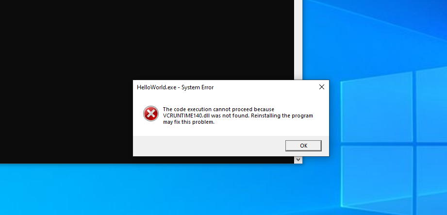
• CRT Imported Functions - Several unresolved functions are present in the IAT which cannot be resolved using approaches such as API Hashing. These functions are imported from the CRT library, which will be explained later. For now, it is sufficient to understand that there are several unused imported functions in any application generated by Visual Studio's default compiler settings. As an example, the IAT of a 'Hello World' program should only import information regarding the printf function, however, it is importing the following functions (output is truncated due to the size).
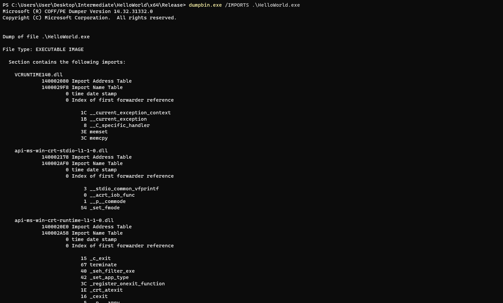
• Size - The generated files are often bigger than they should be due to the default compiler optimizations. For example, the following Hello World program is around 11kb.
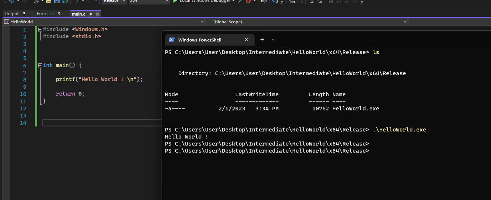
• Debugging Information - Using the Release option can still include debugging-related information and other strings that can be used by security solutions to create static signatures. The images below show the output of executing Strings.exe on the Hello World program (output is truncated due to the size).
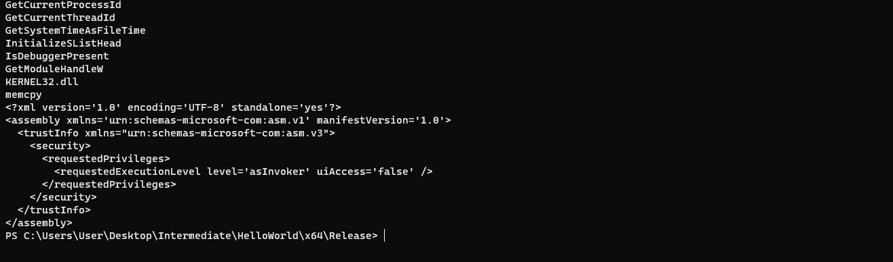
The CRT library
The CRT library, also known as the Microsoft C Run-Time Library, is a set of low-level functions and macros that provide a foundation for standard C and C++ programs. It includes functions for memory management (e.g. malloc, memset and free), string manipulation (e.g. strcpy and strlen) and I/O functions (e.g. printf, wprintf and scanf).
The CRT library DLLs are named vcruntimeXXX.dll where XXX is the version number of the CRT library used. There are also DLLs such as api-ms-win-crt-stdio-l1-1-0.dll, api-ms-win-crt-runtime-l1-1-0.dll and api-ms-win-crt-locale-l1-1-0.dll that are also related to the CRT library. Each DLL serves a particular purpose and exports several functions. These DLLs are linked by the compiler at compile time and therefore are found in the IAT of the generated programs.
Solving Compatibility Issues
By default, when compiling an application, the Runtime Library option in Visual Studio is set to "Multi-threaded DLL (/MD)". With this option, the CRT Library DLLs are linked dynamically which means they are loaded at runtime. This creates the compatibility issues previously mentioned. To solve these issues, set the Runtime Library option to "Multi-threaded (/MT)", as shown below.
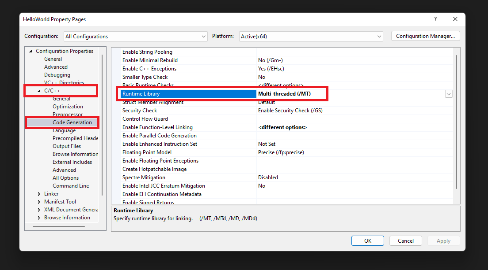
Multi-threaded (/MT)
The Visual Studio compiler can be made to link CRT functions statically by selecting the "Multi-threaded (/MT)" option. This results in functions such as printf being directly represented in the generated program, rather than imported from CRT library DLLs. Note that this will increase the size of the final binary and adds more WinAPIs to the IAT, although it removes the CRT library DLLs.
Using the "Multi-threaded (/MT)" option to compile the Hello World program results in the following IAT.
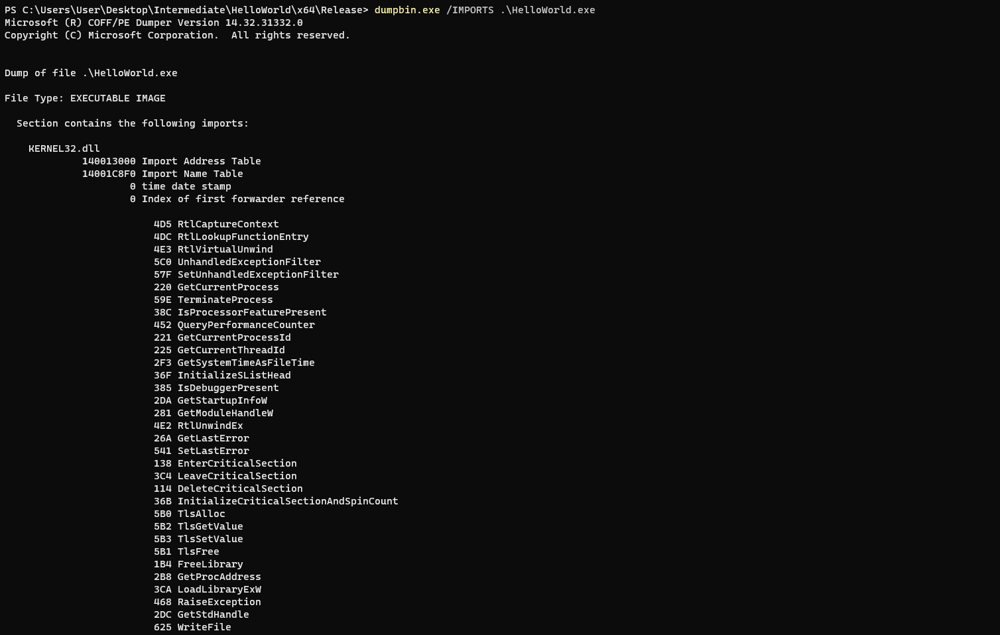
The binary becomes considerably larger as well, as shown below.
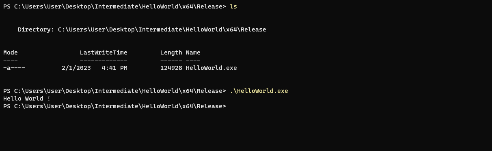
CRT Library & Debugging
After removing the CRT Library, the program can only be compiled in Release mode. This makes it more difficult to debug the code. Therefore, it is recommended that the removal of the CRT Library is only done after debugging and development are complete.
Additional Compiler Changes
The previous sections demonstrated how to statically link the CRT library. However, the ideal solution would be to avoid relying on the CRT library both statically and dynamically, as this can lead to a reduction in the binary size, as well as the removal of unnecessary imported functions and debug information. To accomplish this, several Visual Studio compilation options must be modified.
Disable C++ Exceptions
The Enable C++ Exceptions option is used to generate code to correctly propagate exceptions thrown by the code, however, as the CRT Library is no longer linked, this option is not necessary and should be disabled.
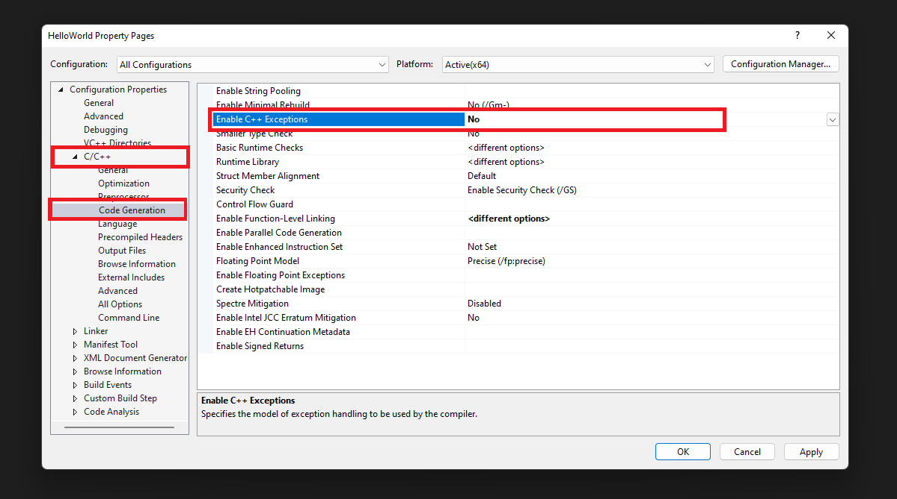
Disable Whole Program Optimization
The Whole Program Optimization should be disabled to prevent the compiler from performing optimizations that may affect the stack. Disabling this option provides complete control over the compiled code.
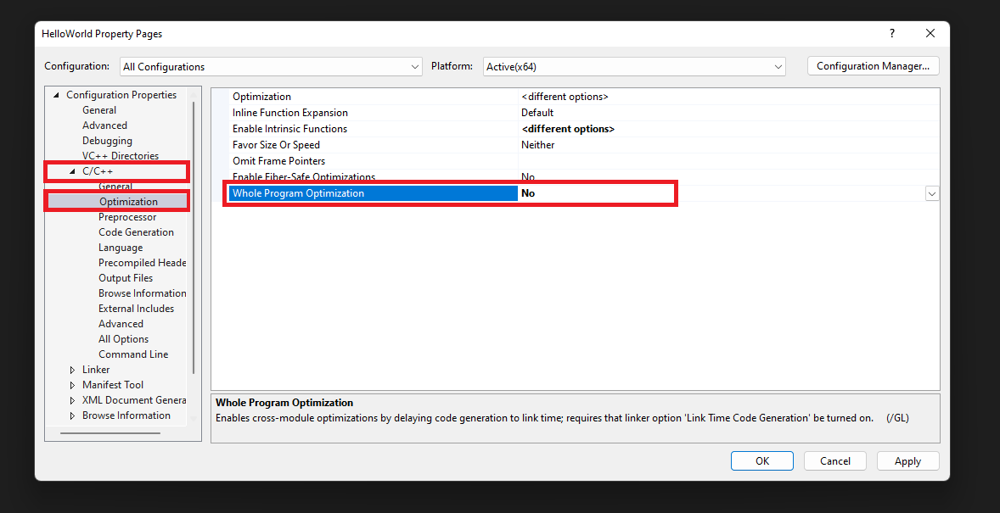
Disable Debug Info
Disable the Generate Debug Info and Generate Manifest options to remove the added debugging information.
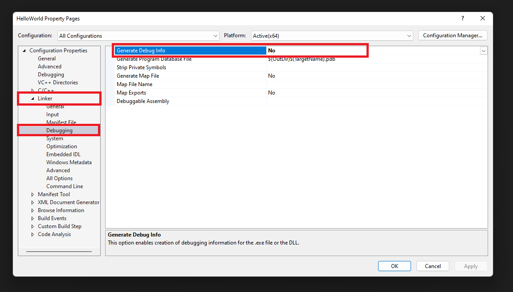
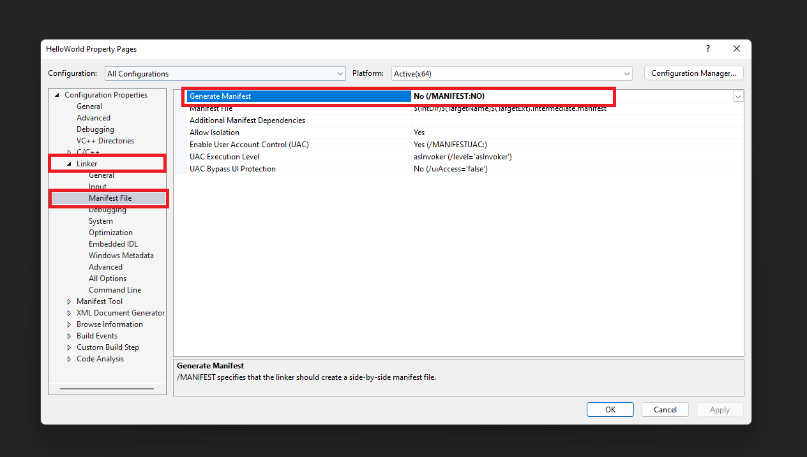
Ignore All Default Libraries
Set the Ignore All Default Libraries option to "Yes (/NODEFAULTLIB)" to exclude the default system libraries from being linked by the compiler with the program. This will result in the exclusion of the linking of the CRT Library as well as other libraries. In this case, it is the responsibility of the user to provide any required functions that are usually provided by these default libraries. The image below shows the "Yes (/NODEFAULTLIB)" option being set.
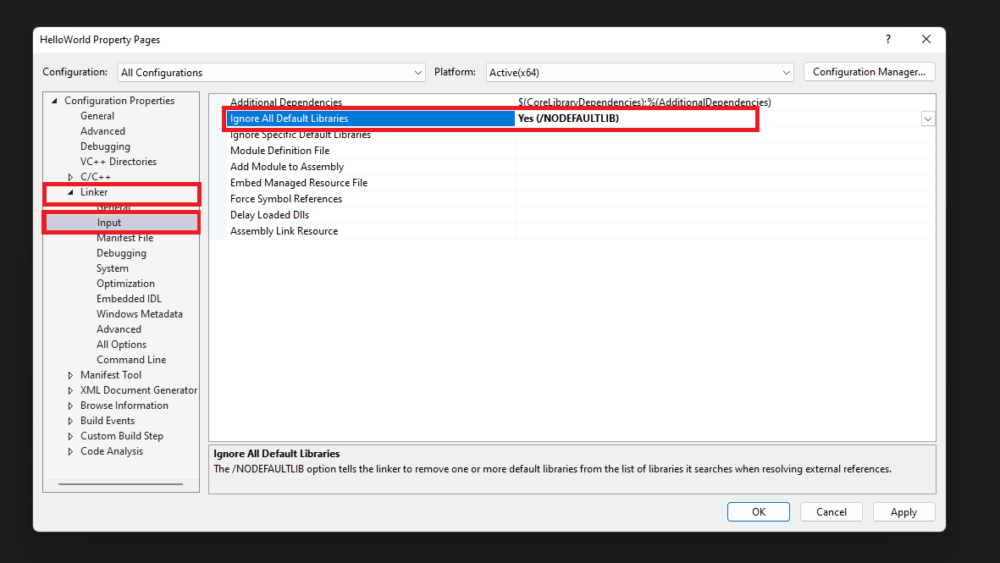
Unfortunately, compiling with that option results in several errors, as shown below.
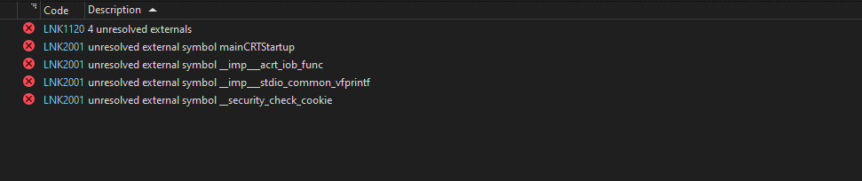
Setting Entry Point Symbol
The first error "LNK2001 - unresolved external symbol mainCRTStartup" implies that the compiler was unable to locate the definition for the "mainCRTStartup" symbol. This is expected as "mainCRTStartup" is the entry point for a program that has been linked with the CRT Library, which is not the case here. To resolve this issue, a new entry point symbol should be set as shown below.
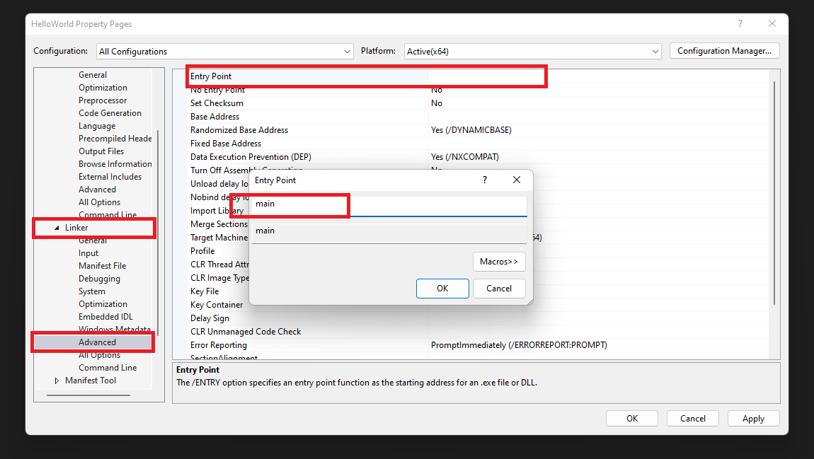
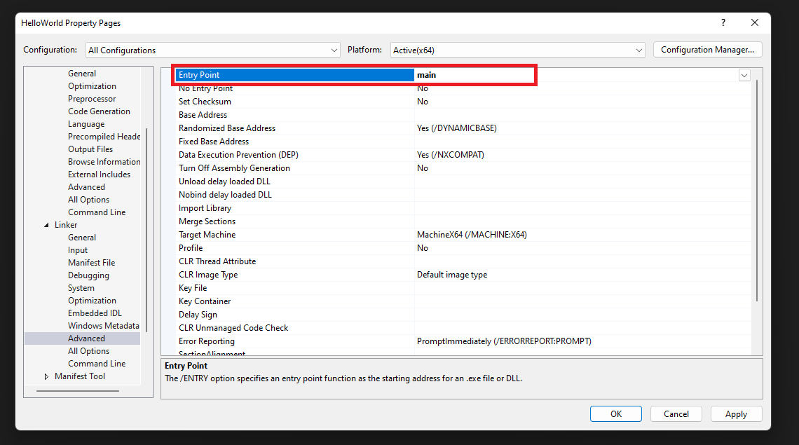
The entry "main" represents the main function in the source code. To choose a different function as an entry point, simply set the entry point symbol to that function's name. Recompiling results in fewer errors, as shown below.
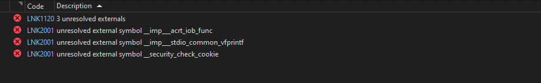
Disable Security Check
The next error, "LNK2001 - unresolved external symbol __security_check_cookie", means that the "__security_check_cookie" symbol was not found by the compiler. This is a symbol that is used to perform a stack cookie check which is a security feature that helps in preventing stack buffer overflows. To solve this, set the Security Check option to "Disable Security Check (/Gs-)" as shown below.
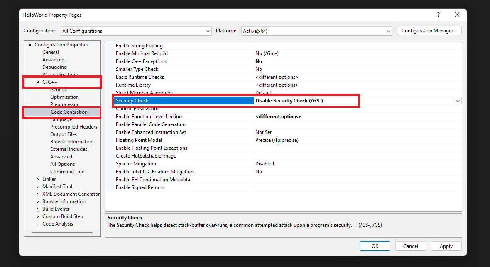
Disable SDL Checks
Once the security check is disabled, the error disappears but a new warning shows up.
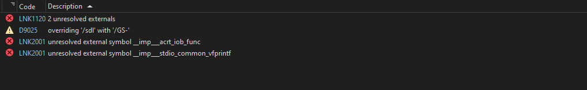
The "D9025 - overriding '/sdl' with '/GS-'" warning can be resolved by disabling the Security Development Lifecycle (SDL) checks.
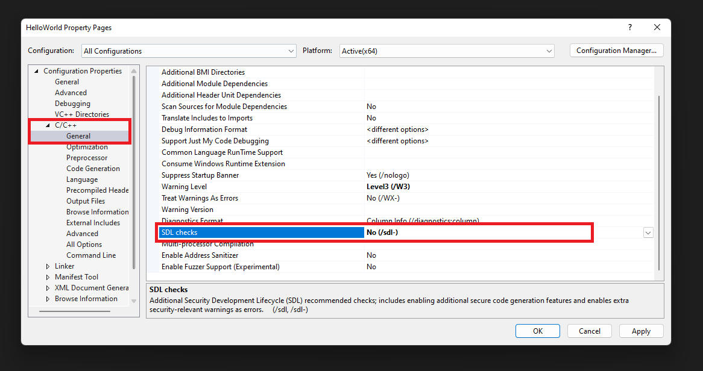
Two unresolved symbol errors remain, which are resolved in the Functions Replacement section below.
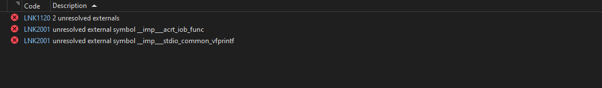
Replacing CRT Library Functions
Two errors remain unresolved due to the removal of the CRT Library. The printf function is currently being used to print to the console, although the CRT Library has been removed from the program.
When removing the CRT Library, writing one's own version of functions such as printf, strlen, strcat, memcpy is necessary. Libraries like VX-API may be used for this purpose. For example, StringCompare.cpp replaces the strcmp function for string comparison.
Replacing Printf
For the demo program used in this module, the printf function is replaced with the following macro.
#define PRINTA( STR, ... ) \
if (1) { \
LPSTR buf = (LPSTR)HeapAlloc( GetProcessHeap(), HEAP_ZERO_MEMORY, 1024 ); \
if ( buf != NULL ) { \
int len = wsprintfA( buf, STR, __VA_ARGS__ ); \
WriteConsoleA( GetStdHandle( STD_OUTPUT_HANDLE ), buf, len, NULL, NULL ); \
HeapFree( GetProcessHeap(), 0, buf ); \
} \
}The PRINTA macro takes two arguments:
STR - The format string which represents how to print the output.__VA_ARGS__ or ... - Which are the arguments to be printed.The PRINTA macro allocates a heap buffer of size 1024 bytes, then uses the wsprintfA function to write formatted data from the variable arguments (__VA_ARGS__) into the buffer using the format string (STR). Subsequently, the WriteConsoleA WinAPI is used to write the resulting string to the console, which is obtained via the GetStdHandle WinAPI.
Replacing printf with PRINTA results in the Hello World program that is independent of the CRT Library. This code resolves any remaining errors and can now compile successfully.
#include <Windows.h>#include <stdio.h>#define PRINTA( STR, ... ) \
if (1) { \
LPSTR buf = (LPSTR)HeapAlloc( GetProcessHeap(), HEAP_ZERO_MEMORY, 1024 ); \
if ( buf != NULL ) { \
int len = wsprintfA( buf, STR, __VA_ARGS__ ); \
WriteConsoleA( GetStdHandle( STD_OUTPUT_HANDLE ), buf, len, NULL, NULL ); \
HeapFree( GetProcessHeap(), 0, buf ); \
} \
} int main() {
PRINTA("Hello World ! \n");
return 0;
}Building a CRT Library Independent Malware
When building malware that does not utilize the CRT Library, there are a few items to take note of.
Intrinsic Function Usage
Some functions and macros in Visual Studio use CRT functions to perform their tasks. For example, the ZeroMemory macro uses the CRT function memset to populate the specified buffer with zeros. This requires the developer to find an alternative to that macro since it cannot be used. In this case, the CopyMemoryEx.cpp function can be used as a replacement.
Another solution would be manually setting custom versions of CRT-based functions like memset. Forcing the compiler to deal with this custom function instead of using the CRT exported version. Sequentially, macros like ZeroMemory will also use this custom function.
To demonstrate this, a custom version of the memset function can be specified to the compiler in the following manner, using the intrinsic keyword.
#include <Windows.h>// The `extern` keyword sets the `memset` function as an external function.
extern void* __cdecl memset(void*, int, size_t);
// The `#pragma intrinsic(memset)` and #pragma function(memset) macros are Microsoft-specific compiler instructions.
// They force the compiler to generate code for the memset function using a built-in intrinsic function.
#pragma intrinsic(memset)#pragma function(memset)void* __cdecl memset(void* Destination, int Value, size_t Size) {
// logic similar to memset's one
unsigned char* p = (unsigned char*)Destination;
while (Size > 0) {
*p = (unsigned char)Value;
p++;
Size--;
}
return Destination;
}
int main() {
PVOID pBuff = HeapAlloc(GetProcessHeap(), 0, 0x100);
if (pBuff == NULL)
return -1;
// this will use our version of 'memset' instead of CRT's Library version
ZeroMemory(pBuff, 0x100);
HeapFree(GetProcessHeap(), 0, pBuff);
return 0;
}Hiding The Console Window
Malware should not spawn a console window when executed, as this is highly suspicious and allows the user to terminate the program by closing the window. To prevent this, ShowWindow(NULL, SW_HIDE) can be used at the start of the entry point function, though this requires time (in milliseconds) and can cause a noticeable flash.
A better solution is to set the program to be compiled as a GUI program by setting the Visual Studio SubSystem option to "Windows (/SUBSYSTEM:WINDOWS)".
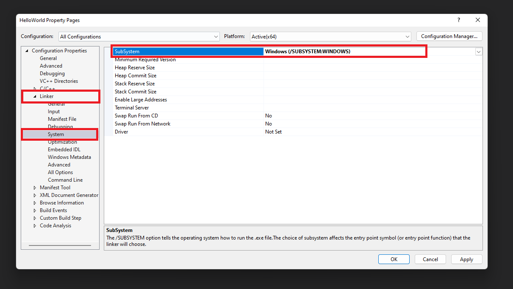
Demo
After performing all the steps explained in this module, the results are shown.
First, the binary size is reduced from 112.5kb to approximately 3kb.
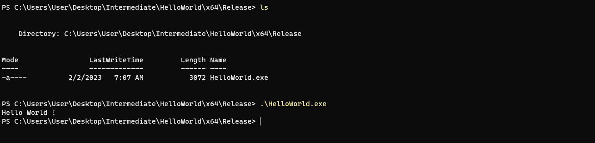
Next, no unused functions are found in the IAT.
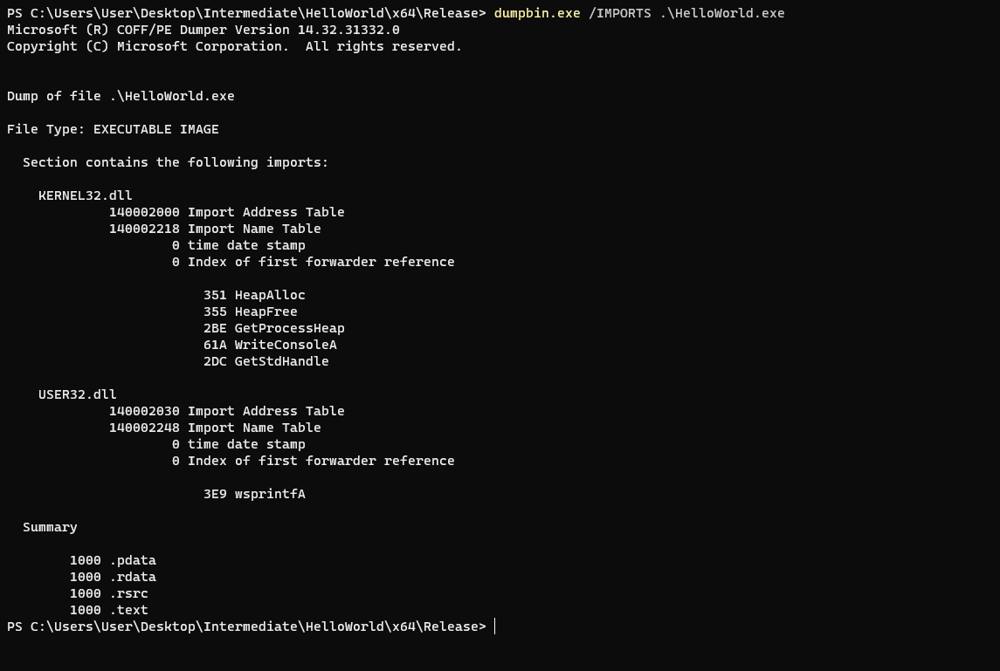
Fewer strings are found in the binary with no debug information.
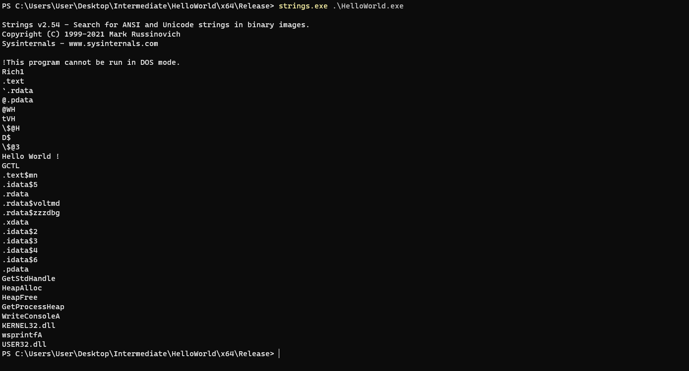
Finally, the removal of the CRT Library results in better evasion. The binary is uploaded to VirusTotal twice, the first time it is using the "Multi-threaded (/MT)" option to statically link the CRT library. The second time is when the CRT Library was completely removed.
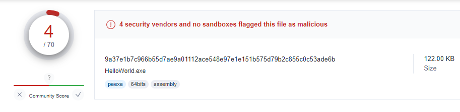
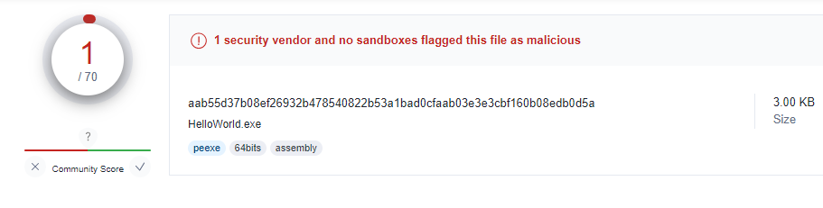